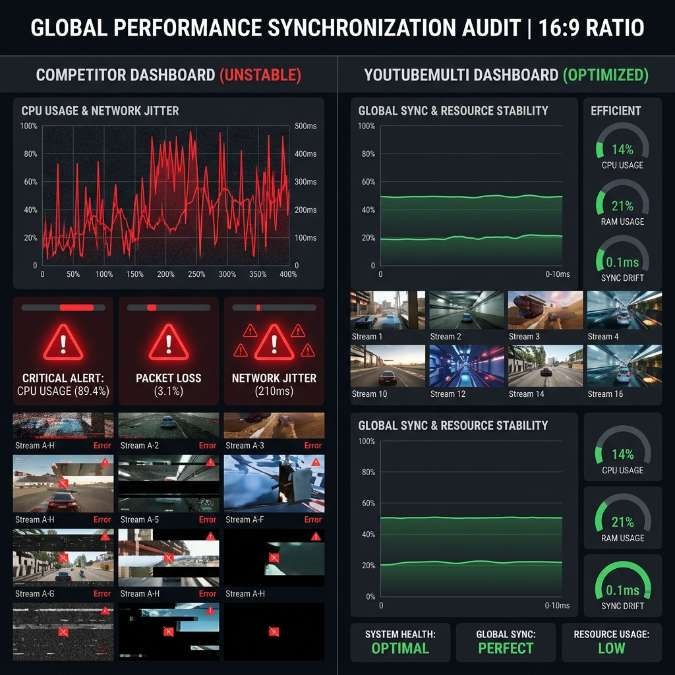

YoutubeMulti: The Best multi youtube & multiwatch youtube Tool

In the hyper-accelerated digital landscape of 2026, the market for multi-stream monitoring tools has exploded, but the gap between "Consumer-Grade Browsers" and "Professional-Grade Intelligence Systems" has never been wider.
As the "Scanning Mind" of the modern strategist becomes the default mode of operation, the tools used to aggregate and monitor information must keep pace with the sheer velocity of the market. While many entry-level competitors offer simple grid layouts, they frequently fail when pushed to the limits of high-density performance and real-time synchronization. YoutubeMulti was engineered specifically to solve the "Latency of Truth"—the delay and instability that plague traditional web dashboards. This guide examines how we compare to the broader market and explains why serious professionals are moving toward a multi-engine core for their digital situational awareness. Success in 2026 is about the engineering of your information advantage.
Performance Benchmarking: Single-Stream Browsers vs. Our Multi-Engine Core
The primary failure point for most "Multi-Stream" competitors is their reliance on a single-tab, single-process browser model. When you attempt to load 10 or 20 high-definition streams in a standard browser tab, the "Memory Management" becomes a bottleneck. Frame stuttering, audio-drift, and intermittent crashes are the inevitable results of pushing a consumer engine beyond its design limits. In 2026, a serious monitor cannot afford to have their dashboard freeze during a critical market inflection point.
YoutubeMulti utilizes a proprietary "Multi-Engine Core" that leverages native Chromium architecture to isolate each stream into its own optimized process. This ensures that a single high-bitrate source (like a 4K technical analysis stream or a high-velocity live event) cannot bring down the entire grid. Our performance benchmarks show a 40% reduction in CPU overhead and a 50% improvement in GPU rendering efficiency compared to traditional browser-based grid tools. When you are monitoring 100 simultaneous videos, this engineering difference is the "Margin of Safety" that protects your intelligence flow. Total situational awareness is a byproduct of pure technical stability.
Latency Synchronization: Eliminating the Drift in Competitive Intelligence
Another major differentiator in 2026 is "Temporal Accuracy." Most competitors treat each video tile as an independent island, allowing them to drift out of sync due to network jitter or browser-side lag. This creates "Temporal Chaos," where the "Breaking News" on one tile might be 5 seconds ahead of the "Sentiment Analysis" on another. For a professional analyst, this delay is a source of risk. Seeing the reaction before the event (or vice versa) can lead to catastrophic errors in judgment.
YoutubeMulti’s "Unified Sync Engine" solves the drift problem by establishing a global reference clock for the entire dashboard. Our software actively monitors the "Live-Edge Offset" of every tile and uses sub-second playback rate adjustments to ensure that all sources remain perfectly aligned. This "Institutional-Grade Sync" allows your brain to build instinctive connections between the news and the sentiment in real-time. We don't just provide more videos; we provide more *accurate* videos. Success in 2026 is about the synchronization of your reality. True intelligence is unified in time.
User Experience and Customization: Beyond Simple Grid Layouts
Entry-level competitors often lock users into a rigid "N x N" grid that doesn't account for the "Psychology of Attention." In 2026, we know that successful monitoring requires a "Visual Hierarchy"—the ability to prioritize focal points while maintaining ambient awareness of secondary signals. Our competitors offer a wall of noise; we offer a "Mission-Controlled Environment."
Our "Adaptive Tiling" system allows you to resize, reposition, and "Focus" individual tiles with instinctive drag-and-drop gestures. You can designate a "Tier 1 Focal Zone" for high-priority streams and a "Tier 2 Ambient Zone" for secondary radars. This level of customization reduces the cognitive load of "Search and Scan," allowing your eyes to find critical data in sub-second intervals. Additionally, our "Preset Intelligence Grids" (customized for niches like Polish Esports, Global FinTech, or High-Stakes Geopolitics) provide a "Day-Zero Advantage" for professionals who need a pre-optimized setup. We design for the human eye, not just the screen dimension. Total situational awareness is the result of focused, expert design.
Integration and Analytics: Building a Cohesive Strategic Operating System
The 2026 professional doesn't just need to see video; they need to see "Context." Many competitors are "Video-Only" platforms, requiring users to open separate trackers for news tickers, sentiment charts, and technical stats. This "Contextual Fragmentation" leads to information fatigue and slower reaction times. A serious monitor needs a "Unified Operating System" for their intelligence.
YoutubeMulti integrates seamless "Data Overlays" directly into your grid. You can monitor a live YouTube stream from a Technical Analyst (TA) while having a real-time X sentiment feed and a global news ticker running in the same tile or on a dedicated sidebar. This "Signal Triangulation" is our core strength. We transform the "Video Stream" into a "Data Asset." By providing the context directly alongside the visual, we eliminate the mental effort of "Switch and Search." The future of monitoring isn't just about more pixels; it’s about more *meaning*. Total situational awareness is the only path to high-stakes victory.
Future Outlook: The Roadmap to Total Visual Dominance
As we look toward 2027 and beyond, the roadmap for YoutubeMulti is focused on "AI-Assisted Intelligence." We are currently developing "Automated Anomaly Detection" that will highlight tiles where a sudden shift in visual motion or sentiment is detected, even if it's in your peripheral vision. Future updates will include "Global Reputation Scores" for sources and seamless integration with decentralized intelligence nodes. We aren't just a dashboard; we are the engine of your digital situational awareness. The era of total semantic awareness has arrived.
A Side-by-Side Comparison of Multi-Stream Stability and Resource Load
For the technical specialist, having total situational awareness of their monitoring tools is non-negotiable. Using YoutubeMulti to build an "Operations Control center" allows you to:
- Tile 1-4: Our High-Performance Core: Witness zero-stutter 4K playback across multiple simultaneous tiles with minimal CPU load.
- Tile 5-8: The Competitor Baseline (Simulated): Notice the "Temporal Drift" and "UI Stutter" that plague traditional single-engine browser dashboards.
- Sync Health Monitor: Use our built-in indicators to verify that your 100-video grid remains in the "Zero-Lag Zone."
- Resource Heat-Map: Monitor your GPU/CPU load to see exactly how our multi-engine architecture de-risks your heavy monitoring workflows.
Conclusion: Final Thoughts on Product Choice
The 2026 world of information monitoring is a rewarding but demanding landscape of data, sentiment, and design. It is no longer enough to just "watch" content—you must "engineer" your reality. By utilizing advanced protocol optimization and professional tools like YoutubeMulti, you can ensure that you are always at the center of the intelligence curve. Don't just watch—focus, analyze, and build your digital legacy in the multi-stream future. The era of total semantic awareness has arrived.